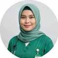
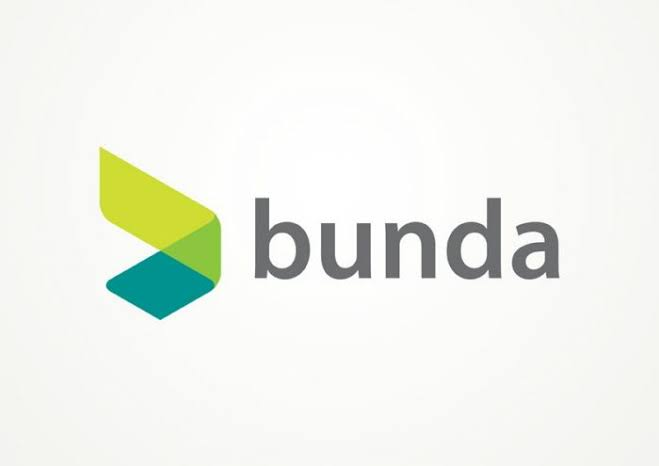
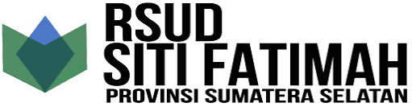
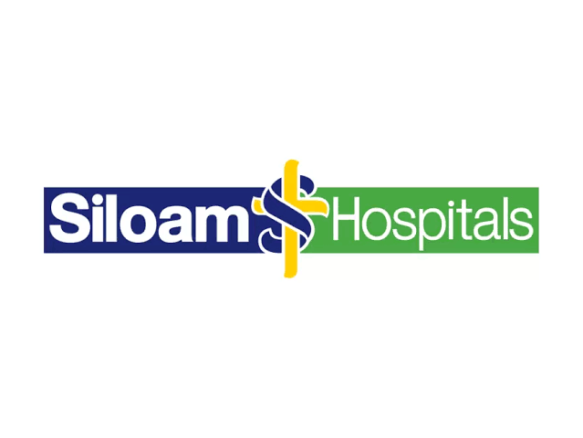

Rekam Medis & Informasi Kesehatan
Penguatan Kompetensi RMIK
Program pengembangan pengetahuan dan keterampilan bidang rekam medis dan informasi kesehatan.
Program bidang profesi
Ruang belajar dan pengembangan kompetensi bagi tenaga kesehatan melalui pelatihan, workshop, dan bimbingan teknis yang relevan dengan kebutuhan praktik.
RLC memiliki fondasi kelembagaan dan pengalaman kegiatan pembelajaran. Platform digital ini dirancang untuk membuat keunggulan tersebut lebih mudah ditemukan, dipahami, dan diakses oleh peserta maupun institusi.
Pelatihan BTCLS Tenaga Kesehatan
Pelatihan PPI (Pencegahan & Pengendalian Infeksi) Batch 3
Contoh tampilan katalog program. Daftar, jadwal, biaya, dan kuota final akan mengikuti agenda resmi yang dikonfirmasi oleh RLC.
Program pengembangan pengetahuan dan keterampilan bidang rekam medis dan informasi kesehatan.
Ruang belajar untuk memperbarui wawasan dan keterampilan praktik tenaga keperawatan dan kebidanan.
Contoh kategori pembelajaran untuk mendukung pengembangan kompetensi bidang farmasi klinik.
Penguatan kapasitas pengelolaan dan tata kelola layanan pada fasilitas pelayanan kesehatan.
Contoh format workshop tematik untuk mendukung mutu dan keselamatan layanan kesehatan.
Rancangan program yang dapat dibicarakan bersama berdasarkan kebutuhan organisasi dan tim.
*Contoh konten demonstrasi, bukan pengumuman jadwal atau penawaran kelas yang sedang dibuka.
Rumah sakit, klinik, Puskesmas, dan institusi kesehatan dapat menyampaikan kebutuhan pengembangan SDM untuk dibahas menjadi program pelatihan yang sesuai.
Pilihan program pelatihan yang relevan dengan kebutuhan tenaga kesehatan saat ini.


Cek keaslian sertifikat pelatihan RLC secara mandiri dan cepat.
ⓘ Terhubung dengan database resmi setelah integrasi dan otorisasi RLC disiapkan. Saat ini merupakan simulasi demonstrasi.
Cerita sukses dan pengalaman langsung dari para dokter, perawat, dan tenaga medis
yang telah mengikuti pelatihan kami.
“Pelatihan ACLS di RLC sangat profesional dan aplikatif. Instrukturnya sangat berpengalaman.”
RSUD Pasar Minggu, Jakarta
“Materi BTCLS sangat terstruktur dan mudah dipahami. Fasilitas praktik sangat memadai!”
RS Sentosa
“Sangat terbantu dengan Workshop USG & ANC. Instrukturya sabar dan telaten membimbing.”
Klinik Pratama Medika

“Pelatihan BHD & PPI di RLC sangat interaktif. Sangat merekomendasikan untuk tim medis.”
Puskesmas Depok

“Manajemen pelatihan yang sangat tertib, materi up-to-date, dan sertifikasi cepat diproses.”
RSUD Dr. Soetomo
Temukan informasi awal mengenai program pelatihan dan layanan Rifdaira Learning Center.
Program RLC ditujukan bagi tenaga kesehatan dan peserta sesuai bidang serta persyaratan masing-masing program. Silakan hubungi tim RLC untuk memastikan kesesuaian program.
Pilih program yang diminati, lalu sampaikan permintaan informasi melalui formulir kontak. Tim RLC dapat membantu memberikan informasi pendaftaran dan jadwal yang tersedia.
RLC membuka konsultasi kebutuhan pengembangan kompetensi untuk rumah sakit, klinik, Puskesmas, dan institusi kesehatan. Ruang lingkup program dibahas berdasarkan kebutuhan institusi.
Ketentuan sertifikat mengikuti jenis program dan persyaratan yang berlaku. Silakan konfirmasi detail sertifikat untuk pelatihan yang ingin diikuti kepada tim RLC.
Isi formulir di samping dengan informasi institusi dan kebutuhan kerja sama. Tim RLC dapat menindaklanjuti untuk membahas kebutuhan dan kemungkinan program bersama.
Kebutuhan pelatihan in-house dapat disampaikan melalui formulir. Topik, sasaran peserta, format, dan rencana pelaksanaan akan dibahas bersama RLC.
Sampaikan pertanyaan, minat pelatihan, atau kebutuhan kerja sama institusi Anda.
Sampaikan minat program atau kebutuhan pelatihan institusi Anda.
Isi data berikut sebagai simulasi alur permintaan informasi. Pada implementasi final, formulir akan diteruskan ke kanal admin RLC.
Ekosistem Institusi Kesehatan
Contoh institusi kesehatan nasional sebagai referensi sektor layanan dan pengembangan kompetensi.



Logo dan nama ditampilkan sebagai contoh institusi di sektor kesehatan, bukan pernyataan bahwa institusi tersebut merupakan klien atau mitra RLC.